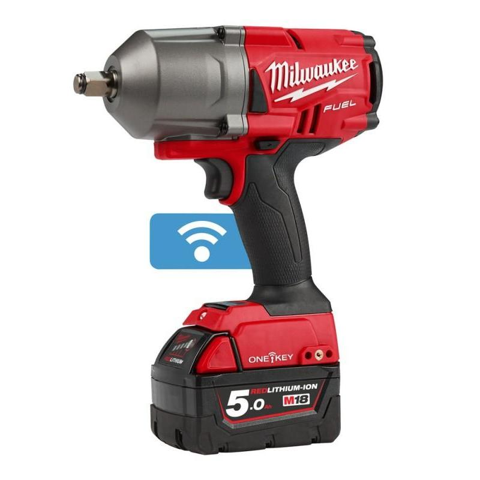

Klucz Milwaukee M18 ONEFHIWF12-502X

3 499,99 PLN
Wysokoobrotowy klucz udarowy M18 FUEL™ z technologią ONE-KEY™ zapewnia moment obrotowy 1356 Nm.
Główne cechy produktu:
- Uchwyt narzędzia: 1/2" kwadratowy (z pierścieniem zabezpieczającym)
- Typ akumulatora: Li-ion
- Ilość akumulatorów: 2
- Niezawodny, bezszczotkowy silnik POWERSTATE™ zapewniający dłuższą żywotność.
- 4-stopniowy system DRIVE CONTROL™ pozwalający na precyzyjną kontrolę prędkości pracy.
- Wbudowany czujnik liczący uderzenia zwiększa powtarzalność wybranego momentu obrotowego.
- Technologia ONE-KEY™ do bezprzewodowego zarządzania i lokalizowania narzędzia.
| Parametr | Wartość |
|---|---|
| Napięcie akumulatora | 18V |
| Maks. moment obrotowy | 130/400/1356/1356 Nm |
| Moment zrywający | 1898 Nm |
| Częstotliwość udaru | 0-950/0-1750/0-2100/0-2100 ud./min |
| Prędkość bez obciążenia: | 0-550/0-1400/0-1750/0-1750 obr/min |